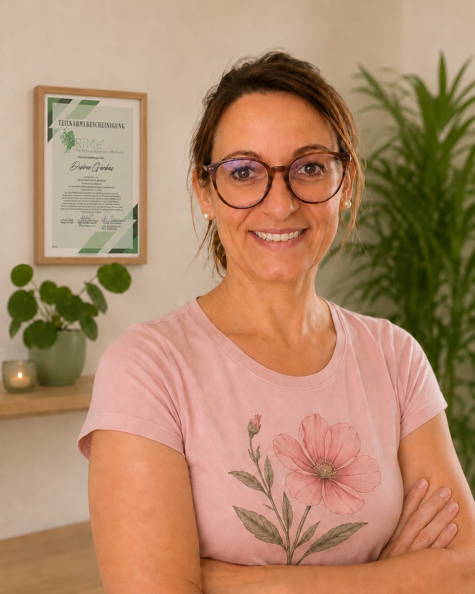
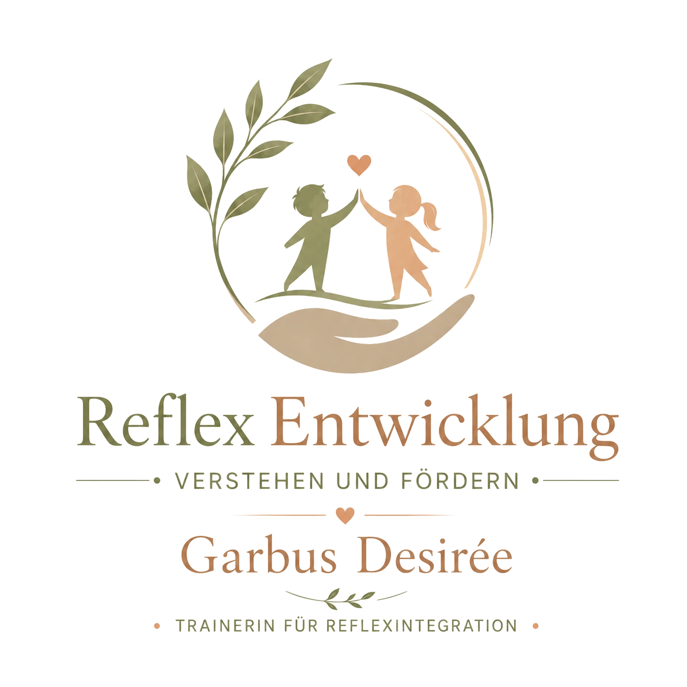

Ruhige 1:1-Begleitung
In einem geschützten Rahmen, individuell auf die Bedürfnisse deines Kindes abgestimmt.
Diese Website informiert über Reflexintegration und entwicklungsorientierte Begleitung.
Mit „Hinweis verstanden“ bestätigt ihr, diesen Hinweis gelesen zu haben.
Manches Verhalten wird leichter verständlich, wenn wir nicht nur auf das Ergebnis, sondern auf die Entwicklung dahinter schauen. Ich begleite Kinder achtsam, klar und ohne Leistungsdruck – mit kindgerechten Übungen und einer guten Einbindung der Eltern.


In einem geschützten Rahmen, individuell auf die Bedürfnisse deines Kindes abgestimmt.
Ihr bekommt Hintergrundwissen und einfache Impulse für euren Alltag.
Spielerisch, kindgerecht und möglichst leicht in euren Alltag integrierbar.
Jede Begleitung beginnt mit genauem Zuhören. Gemeinsam betrachten wir die aktuelle Situation, die Stärken des Kindes und jene Bereiche, in denen mehr Sicherheit, Ruhe oder Koordination hilfreich sein kann.
Kennenlernen, Anliegen klären und gemeinsam einschätzen, ob das Training zum Kind und zur aktuellen Situation passt.
Kindgerechte Übungen, abgestimmt auf Alter, Belastbarkeit, Tagesform und die vereinbarten Ziele.
Strukturierte Bewegungsimpulse zur Unterstützung von Körperwahrnehmung, Koordination und Selbstregulation.
Kleine, nachvollziehbare Übungen, die realistisch in den Familienalltag integriert werden können.
Klare Rückmeldungen, verständliche Einordnung von Beobachtungen und gemeinsame Planung der nächsten Schritte.
Regelmäßige Rückschau: Was verändert sich, was braucht noch Zeit und wie wird die Begleitung sinnvoll angepasst?
Eltern nehmen oft sehr genau wahr, dass ihr Kind in bestimmten Situationen mehr Unterstützung braucht. Reflexintegration kann dabei eine ergänzende, entwicklungsorientierte Möglichkeit sein.
Die genannten Beobachtungen sind keine Diagnose. Sie können unterschiedliche Ursachen haben. Das Angebot versteht sich als Training und Entwicklungsbegleitung.
Ihr wisst von Anfang an, was als Nächstes passiert. Dauer, Häufigkeit und Kosten bespreche ich mit euch transparent, bevor wir beginnen.
Schreibt mir kurz oder ruft mich an. Gemeinsam klären wir euer Anliegen und den organisatorischen Rahmen.
Wir lernen uns in Ruhe kennen. Ihr erzählt mir, was euch im Alltag beschäftigt, und ich nehme mir Zeit für euch und euer Kind.
Aus meinen Beobachtungen entwickle ich einen überschaubaren, kindgerechten Ablauf mit klaren Schwerpunkten.
Wenn es für euch gut passt, ergänzen wir die Einheiten durch kurze, alltagstaugliche Übungen für zuhause.
Wir schauen gemeinsam auf Veränderungen und passen das weitere Vorgehen bei Bedarf an.
Als Trainerin für Reflexintegration begleite ich Kinder und Familien mit einem ruhigen Blick auf Bewegung, Wahrnehmung, Entwicklung und Alltag. Im Mittelpunkt steht für mich nicht, was ein Kind „noch nicht kann“, sondern was es braucht, um sich sicherer und leichter entwickeln zu können.
Mir ist wichtig, dass sich Kinder angenommen fühlen und Eltern nachvollziehen können, was wir tun und warum. Deshalb arbeite ich klar, achtsam und in einem Tempo, das zum Kind passt.
Die wichtigsten Antworten vor dem ersten Termin.
Ob die Begleitung sinnvoll ist, hängt weniger von einer starren Altersgrenze als vom Entwicklungsstand, dem Anliegen und der Mitarbeit des Kindes ab. Das wird im Erstgespräch geklärt.
Das ist individuell. Nach dem Ersttermin werden ein sinnvoller Rahmen und mögliche Abstände besprochen. Es gibt keine pauschale Erfolgs- oder Dauerzusage.
Kleine Übungen können die Begleitung unterstützen. Ich erkläre sie euch so, dass sie möglichst gut in euren Alltag passen. Umfang und Machbarkeit stimmen wir gemeinsam ab.
Nein. Das Angebot ist keine medizinische, psychologische oder therapeutische Behandlung und ersetzt diese nicht.
Die Termine finden nach Vereinbarung im Raum Gralla/Leibnitz statt. Den genauen Ort und alle organisatorischen Details bekommt ihr bei der Terminvereinbarung von mir.
Ihr seid euch noch nicht sicher, ob Reflexintegration für euch und euer Kind passen könnte? Erzählt mir kurz, was euch beschäftigt. Ich melde mich persönlich bei euch und wir besprechen alles Weitere ganz in Ruhe.